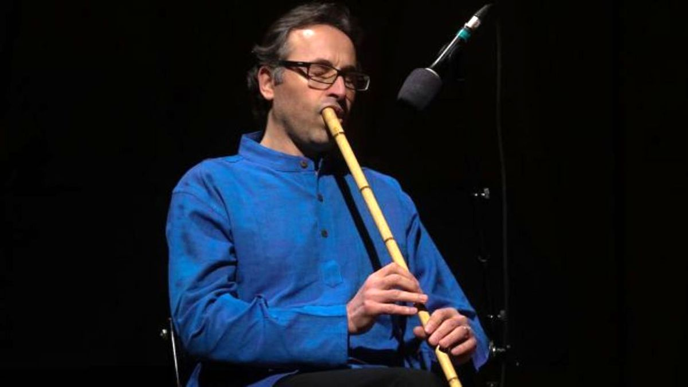

The piece Chārmezrāb-e Dashtī from the album Silk Road Journeys – When Strangers Meet is a Persian classical composition in the mode Avaz-e Dashti based on a theme by the Persian legendary tar-player Jalil Shahnaz. In this piece, Kayhan Kalhor, Siamak Jahangiri, and Siamak Aghaei perform setar, ney, and santur respectively. Although the piece stands within the long tradition of the chärmezräb, as a musical form that has the fastest tempo in Persian classical repertoire and is the most virtuosic piece in a program, this collaborative work offers a few subtly novel features that make the recording really outstanding. Kalhor-Jahangiri-Aghaei’s quote of really beautifully and somehow symmetrically built melody by Shahnaz is used as the refrain that all solo and collective journeys return to; a great celebration of the unbeatable talent of the great melodist, Jalil Shahnaz. (Listen to example 2, the recording where Shahnaz himself plays the theme in his own recording of his original piece.) But the trio’s take on Shahnaz’s work goes beyond a sheer commemoration of Shahnaz/s work and emphasizes new aspects in which the beauty of the rhythmic and motivic materials can be appreciated. It offers a new sonority in which the music is less melodic than colouristic.
 Siamak Jahangiri performing Persian neyThe intertwined texture of setar and santur are specifically outstanding and have been used in a pretty unique way. The setar with its ‘por’ sonority provides a great greyish background for the shiny metallic bells of santur to shine in many important moments. This is a music of colour, when it comes to the way melodies are used to feature tone colours, especially how potentials of monophonic/heterophonic texture are employed to build a sonorous rather than melodic world. Ney is performed at its highest beauty. In particular, the striking moment of its drone-like ‘open string’ gestures that translate certain santur’s hammering or setar’s hit techniques or the effect of violin’s bariolage gives us a vigorous and embodied sonority that feels quite sinuous. There is no percussion instrument! This is an important ‘lack’ which contributes to the expressiveness of the piece and fluidity of the rhythmic imagination, especially given that Persian tombak is a strongly pulse-marking instrument that is a commonplace in all metrical pieces.
This is a music of colour, when it comes to the way melodies are used to feature tone colours, especially how potentials of monophonic/heterophonic texture are employed to build a sonorous rather than melodic world. Ney is performed at its highest beauty. In particular, the striking moment of its drone-like ‘open string’ gestures that translate certain santur’s hammering or setar’s hit techniques or the effect of violin’s bariolage gives us a vigorous and embodied sonority that feels quite sinuous. There is no percussion instrument! This is an important ‘lack’ which contributes to the expressiveness of the piece and fluidity of the rhythmic imagination, especially given that Persian tombak is a strongly pulse-marking instrument that is a commonplace in all metrical pieces.
This is a music of colour, when it comes to the way melodies are used to feature tone colours, especially how potentials of monophonic/heterophonic texture are employed to build a sonorous rather than melodic world.